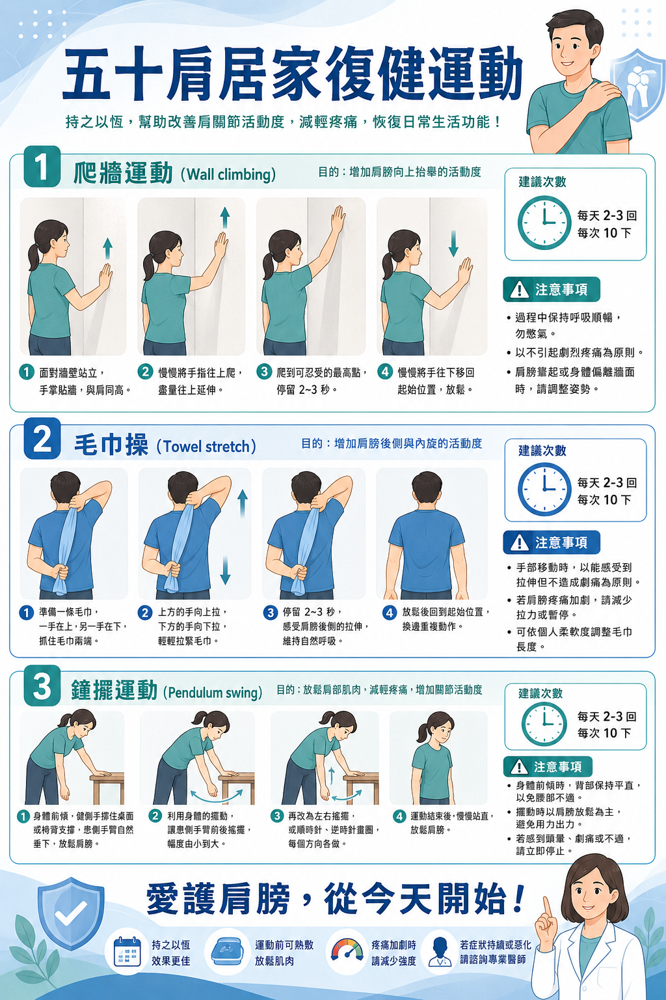
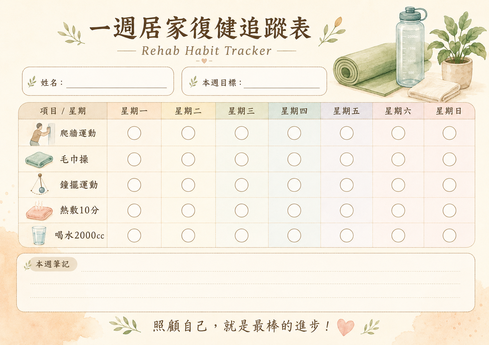
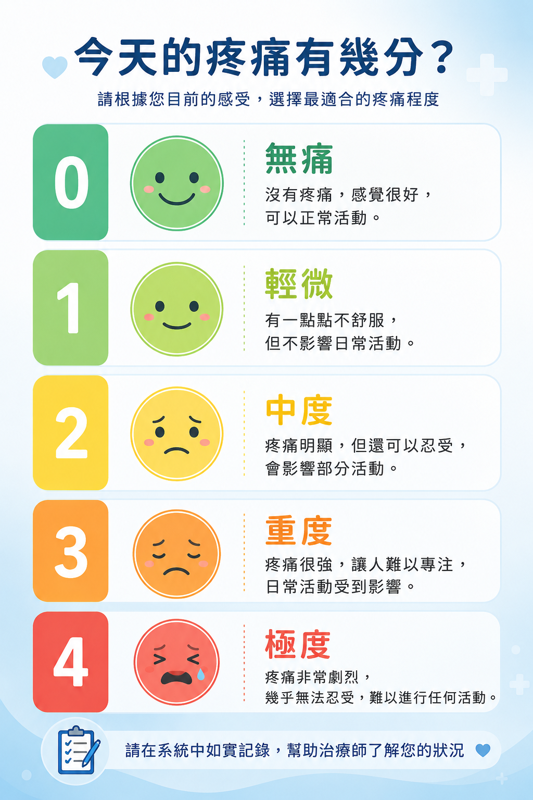

臺大醫院雲林分院 斗六院區 復健部
每日復健紀錄回報系統
協助個案每天記錄疼痛程度、完成的運動項目與備註，讓治療師輕鬆追蹤復健進度。
協助個案每天記錄疼痛程度、完成的運動項目與備註，讓治療師輕鬆追蹤復健進度。
點擊海報可放大檢視，歡迎列印作為居家復健參考

爬牆運動、毛巾操、鐘擺運動，每天 2–3 回，持之以恆改善肩關節活動度。

記錄每天的運動完成情況，幫助您養成規律復健的好習慣。

了解無痛到極度疼痛的 5 個等級，幫助您在系統中如實填寫每日狀況。